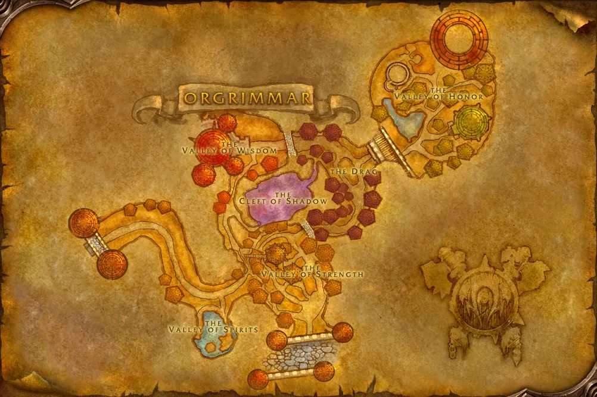

Accès
 Entrée Orgrimmar 52.6, 49.0
Entrée Orgrimmar 52.6, 49.0 5 joueurs · niveaux 13 à 18
5 joueurs · niveaux 13 à 18 6 quêtes · 2 boss
6 quêtes · 2 boss
Le point rouge marque l'entrée du donjon.
Toutes les zones sont sur notre carte interactive.
Sous Orgrimmar, des cultistes de la Lame ardente et des troggs ont envahi les cavernes de lave. C'est le premier donjon de la Horde.
📅 Mise à jour le 4 novembre 2026🛠 Patch 1.60.1.70755

Entrée Orgrimmar 52.6, 49.0 5 joueurs · niveaux 13 à 18 6 quêtes · 2 bossLe point rouge marque l'entrée du donjon.
Toutes les zones sont sur notre carte interactive.
| Objet | Type |
|---|---|
| Brassards cavernicoles | Poignets |
| Robe d'évocation | Torse |
| Lame chantante | Une main |
| Objet | Type |
|---|---|
| Lame corrompue maudite | Main droite |
| Crispins cristallins | Poignets |
| Cape souterraine | Dos |
Butin d'après les données de WoW Classic : Forever a ajouté de nouveaux objets dans les donjons, la liste sera complétée en jeu. Seuls les objets de qualité inhabituelle et mieux sont listés. Passe la souris sur un objet pour voir ses caractéristiques (info-bulle Wowhead), ou clique pour ouvrir sa fiche.
Donnée par : Rahauro (Les Pitons-du-Tonnerre)
Donnée par : Thrall (Orgrimmar)
Donnée par : Varimathras (Fossoyeuse)
Récompense : Pantalon fantomatique · Jambières des vasières · Jambières des Gargouilles
Donnée par : Maur Grimtotem (Gouffre de Ragefeu)
Récompense : Brassards de plumes perlées · Brassards de la savane
Donnée par : Neeru Fireblade (Orgrimmar)
Donnée par : Rahauro (Les Pitons-du-Tonnerre)
Noms des quêtes, des PNJ et des objets d'après les données du jeu (Polestar, CC BY 4.0, et Factoruide/Questie).